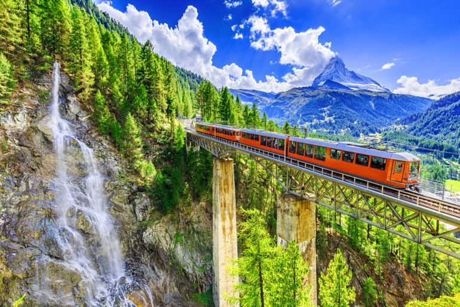
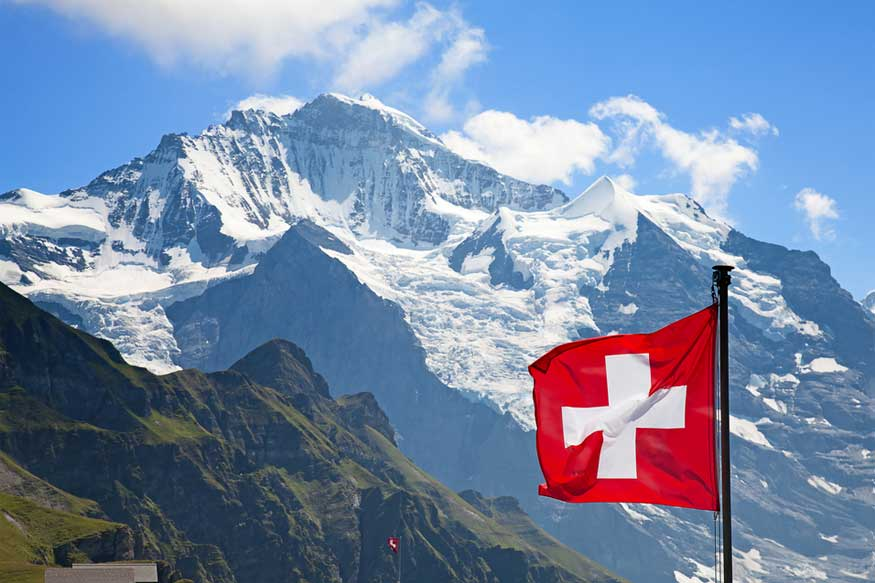
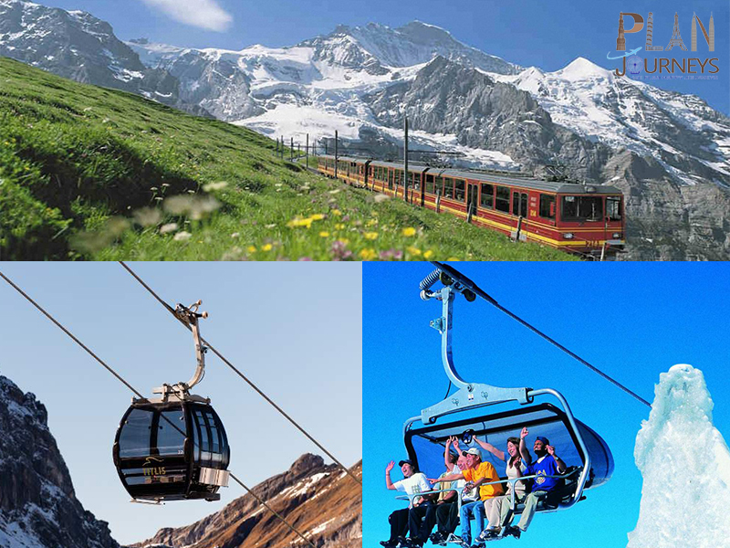
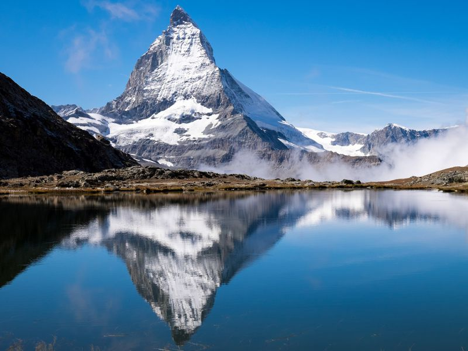

Switzerland Tour Package
|  |
 |
 |
 |
8Days/7Night
Jumbo Discount Price Rs.1,02,999/-
About the Destination
The land of purity and heavenly nature, Switzerland has always grabbed the attention of the world since the birth of tourism! Switzerland is known for its romantic landscapes, ice-laden panoramas of the Alps, rolling green pastures and iconic cities full of culture and history. A perfect journey that takes you to the Top of Europe, Jungfrau and lets you experience world's first revolving cable car at Mt. Titlis. Switzerland with its enchanting and enticing nature that redefined the idea of heaven itself!
The Geography and Seasons
Explore the landlocked country located in Western and Central Europe along with our Switzerland travel packages. Switzerland is surrounded by 5 countries; Austria, Liechtenstein, France, Italy and Germany. The Switzerland holiday packages from India available online, let you experience the significantly different seasons than that from India. The white snow-capped mountains often stand out as the highlights in every trip to Switzerland. The climate here makes it a perfect choice for aimless walks, trekking and mountaineering & adventure activities.
The Culture
Europe is a land of rich culture and history. Our online Switzerland tour package from India explores the in-depth flavour of true Europe that echoes in the cobblestoned streets and lanes of this country. It’s an architectural gem with multi flavoured cuisines at each sector and can be explored along with our Switzerland honeymoon package available online.
The Experience
Every destination’s charm thrives on the experiences that it beholds for the visitor. At Veena World, we believe in giving every individual the trip they dream to have! A special tour with your better half can get extra special with India to Switzerland honeymoon packages available online. Europe has so much in its bounty, that it’s perfect for a family vacation and many other kinds of holidays.
The Highlights
The main highlights of our Switzerland holiday packages from India include Engelberg, Interlaken, Geneva, Bern, Lucerne, Schaffhausen and Zurich. Explore Engelberg along with the scenic beauty of the Zurich Lake and truly understand what makes the lakes, a big hype of this land. Visit the mesmerizing Rhine Falls at Schaffhausen’s Neuhausen. Enjoy romantic boat ride for a spectacular view of the falls along with our India to Switzerland honeymoon packages. Engelberg’s Mt. Titlis awaits you, where you get an amazing chance to take 'Rotair Titlis', popularly known as World's 1st Revolving cable car ride.

|
|